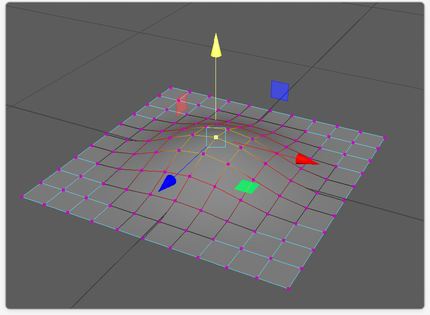
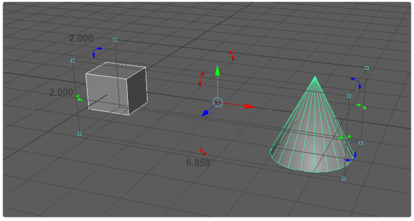

Gizmos are visual aids in 3D software that allow users to manipulate objects. They commonly include move, rotate, and scale functions, which provide intuitive and precise control over object transformations. To learn more, watch this short tutorial video online.
The Problem
The problem with existing gizmos in majority of other 3d tools is that they are inaccessible under bright background conditions or if the object is of a bright colour it submerges the colourful gizmo.
Additionally, they are complex tools that are designed to perform 3 transform actions (move, rotate and scale) in a compact space so that users don’t have to move their cursor to and from the attribute editor where they can manually adjust these transform action through input fields and sliders, and gizmos help get the job done in a small space. They are functional and intuitive but for more advanced user group who are already familiar with gizmos. But a new user, who doesn’t have as much experience or if any, would get lost in figuring it out without proper tutorial or guidance.



The Challange
The challenge in designing gizmos is that we need to account not only for the ability to perform move, rotate and scale transformations but to perform these actions in combination of positive and negative x, y and z axis, and the feedback mechanism that guides and helps a new users about the actions without unnecessarily confusing them with information which is irrelevant at the moment.
Discovery
Over the period of a week we explored the sh!t of out every tool out there that had a gizmo. Our explorations didn’t just end on 3d tools but also the games that required the use of a transform manipulators. We wanted to understand how games are turning a boring 3d transform manipulator into a fun interactive tool.
We then took the team votes on what we liked and disliked in each of the tools and came up with a list of features that we would want for our manipulator.
The Guiding Principles
Along with the features we also solidified our learnings into core principles that would eventually guide us on each of our interaction and visual decisions we would take. We listed them in order of importance:
Exploration
My exploration included different types of contextual gizmo combinations:
- 3d coloured gizmo + bounding box: A 3d gizmo with different colours for three axis (x, y, z). And a bounding box that would surround the selected object/s which would additionally act as a manipulator itself to do different actions.
- 2d gizmo without colour: A simple 2d (flat) gizmo that changes from move and rotate to scale using contextual toolbar underneath it.
- 3d gizmo without colour: A simple 3d gizmo that has the same functionalities like the 2d gizmo but has a more traditional three dimensional shape but without colours for different axis.
After constant feedback and iteration loops with the stakeholders we landed on the option 3 due to it’s simpler yet resembling design with the traditional gizmo for more versatile usage. Which would provide a simpler and cleaner user experience for the new users while providing an on-ramp experience for the same users if they preferred to start learning more advanced 3d tools like Maya or 3ds Max. It would reduce the learning curve required in advancing their 3d tool learning journey.
The Design
My hypothesis for the design of the manipulator was to make the elements in the gizmo appear contextually when asked for which would in turn keep the gizmo at any given point in time simple and reduce the overall complexity to only perform the actions necessary to achieve a certain transform.
After a lot of explorations and feedback sessions we divided gizmo into three contextual sections:
- Mini Gizmo: This is a default manipulator that could perform moving, rotating and scaling actions on a high-level, fast-paced way.
- Move & Rotate Gizmo: This is a manipulator that could perform moving and rotating actions in a precise fashion.
- Rotate Gizmo: This is a manipulator that could perform rotating actions in a precise fashion.

But designing a manipulator that works regardless of the surface it’s put on needed a neutral colour for the body of the manipulator but what happens when the background is the same as that neutral colour itself? Answer is, you wouldn’t be able to see it! For that reason I decided to add a silhouette of the other neutral colour (Black) to create that separation between the background and the body of the manipulator which creates enough contrast between them.
I could have decided to do it the other way around where body is black and the silhouette is white but due to a flaw in our eye sight known as chromatic dilation effect that would it look noisy on coloured backgrounds.
Mini Gizmo
The move interaction starts by hovering on the arrowhead and then based on weather a user moves it slow or fast the supporting element required to perform the particular moving appear or disappear.
If a user is moving is fast that means they are most likely trying to eye-ball their 3d objects and won’t require the use of precise snapping functionality hence it doesn’t appear in that case. However, if decided to move slow, they would be most likely trying to move it precisely and hence would get the precise snapping points tool.
Similar to moving, scaling follows the same set of rules but the only difference it that moving the virtual point (blue dot) up, it upscales the object and moving the point down below the pivot point it downscales the object.
For the rotate interaction, we also have the precise vs fast capabilities. A user could free rotate by rotating the virtual point (Blue dot) outside the ring. And precisely control by snapping the virtual point on the dots inside of the ring — which by default are set to the increments of 15 degrees but users can adjust the snapping increment value from the properties panel if they decide to do so.
Precision Gizmos
Move precision gizmo gets activated either form the toolbar, which just by default enables the use of precise gizmo or by double clicking on the move arrow head of the mini gizmo to enable the precise gizmo. Users could go back to using the mini gizmo by toggling it off the toolbar or by deselecting and re-selecting the object.
Double clicking the scale manipulator from the mini gizmo or from the toolbar just like the move and rotate interaction explained above activates precision scaling mode where a user can do precise scaling actions like move and rotate from a context focused manipulator.

Design Handoff
Handing off something that is to be used in a 3d space needs to be designed in 3d. However, doing everything in figma first made getting stakeholder feedback on the interactions the visual design easier and faster.
Next, once everything was finalized, i replicated figma designs in a 3d tool which i handed off in .usd file to the developers to implement. They followed the figma design files to read the interaction flows and the colour values for different interaction states.
Since the click targets are quite lean, It is a good practice to add some buffer around the gizmo elements so that it gets easier to click on the areas users want to click on even if their cursor sometimes is not on the actual shape. We call them hit boxes in 3d lingo, they provide room for error and less room for false positives and negatives.
The Impact
Our team ended up patenting this new gizmo before the launch.
After our launch though in May of this year, we now have over 10k monthly active users using this tool and constantly providing feedback on autodesk forums to help improve the tool.
We’ll continue improving the tool as we get more feedback but so far we have a positive user sentiment overall regarding the intuitiveness and usefulness of this new gizmo which is a great motivational booster and reassuring that we are doing a great job at meeting the user expectations.